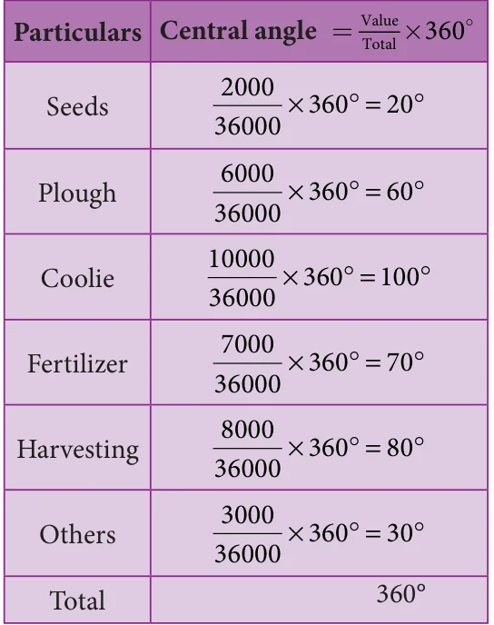
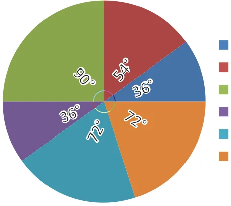
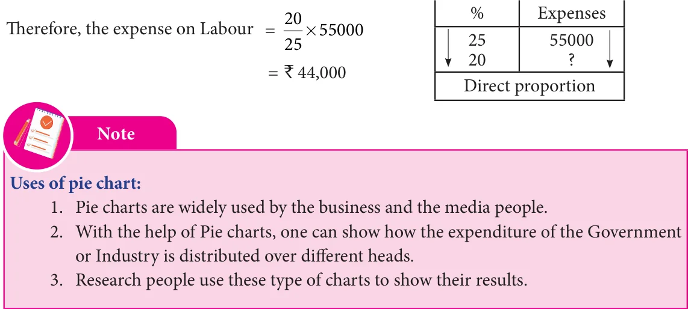

<!DOCTYPE html>
<html lang="en">
<head>
<meta charset="UTF-8">
<meta name="viewport" content="width=device-width,initial-scale=1">
<title>6.3 Graphical Representation of the Frequency Distribution for Ungrouped Data — Statistics</title>
<meta name="description" content="Class 8 Mathematics · Statistics · 6.3 Graphical Representation of the Frequency Distribution for Ungrouped Data">
<link rel="icon" href="data:image/svg+xml,<svg xmlns='http://www.w3.org/2000/svg' viewBox='0 0 100 100'><text y='.9em' font-size='90'>📘</text></svg>">
<link rel="stylesheet" href="../../../assets/book.css">
<link rel="stylesheet" href="https://cdn.jsdelivr.net/npm/katex@0.16.11/dist/katex.min.css" crossorigin="anonymous">
</head>
<body>
<header class="topbar">
<div class="topbar-in">
  <div class="crumb">
    <span class="c1"><a href="../../../index.html">Library</a> · <a href="../../index.html">Class 8 Mathematics</a></span>
    <span class="c2">Statistics · 6.3 Graphical Representation of the Frequency Distribution for Ungrouped Data</span>
  </div>
  <a class="tb-btn" data-nav="prev" href="../../06-statistics/02-frequency-distribution-table-6.2/index.html" title="6.2 Frequency Distribution Table">←</a>
  <details class="drawer"><summary class="tb-btn" title="Sections in this chapter">☰</summary>
<div class="drawer-panel"><div class="dh">Statistics</div><a href="../01-introduction-6.1/index.html">6.1 Introduction</a><a href="../02-frequency-distribution-table-6.2/index.html">6.2 Frequency Distribution Table</a><a href="../03-graphical-representation-of-the-frequency-distribution-for-6.3/index.html" aria-current="page">6.3 Graphical Representation of the Frequency Distribution for Ungrouped Data</a><a href="../04-exercise-6.1/index.html">Exercise 6.1</a><a href="../05-graphical-representation-of-the-frequency-distribution-for-6.4/index.html">6.4 Graphical Representation of the Frequency Distribution for Grouped Data</a><a href="../06-exercise-6.2/index.html">Exercise 6.2</a><a href="../07-exercise-6.3/index.html">Exercise 6.3</a><a href="../08-summary/index.html">SUMMARY</a></div></details>
  <a class="tb-btn" data-nav="next" href="../../06-statistics/04-exercise-6.1/index.html" title="Exercise 6.1">→</a>
  <button class="tb-btn" data-theme-toggle title="Toggle light / dark" aria-label="Toggle light or dark theme">◐</button>
</div>
<div class="progress"><span style="width:80.6%"></span></div>
</header>
<main class="wrap">
<div class="sec-head">
  <p class="eyebrow"><a href="../index.html">Chapter 6 · Statistics</a></p>
  <h1>6.3 Graphical Representation of the Frequency Distribution for Ungrouped Data</h1>
  <p class="sec-meta">Textbook pages 7–10 · 13 figures</p>
</div>
<article class="prose">
<p>A graphical representation is the geometrical image of a set of data. It is a mathematical picture. It enables us to think about a statistical problem in visual terms. A picture is said to be more effective than words for describing a particular thing. The graphical representation of data is more effective for understanding. In the previous classes, we have studied some graphical representations of ungrouped data such as Line graph, Bar graph, and Pictograph. Now, we are going to represent the given ungrouped data in the circular form namely the pie diagram or the pie chart.</p>
<h3 id="s-6-3-1-pie-chart-or-pie-diagram">6.3.1 Pie chart (or) Pie diagram</h3>
<p>A pie chart is a circular graph which shows the total value with its components. The circle is divided into sectors and the area of the sectors is proportional to the information given. Pink The area of a circle represents the total value \(^{Red}\)</p>
<figure class="fig"></figure>
<aside class="sidenote"><p>Blue</p></aside>
<p>and the different sectors of the circle represent Green the different components. In the ‘pie chart’ the Yellow data are mostly expressed in percentage. Each component is expressed as percentage of the total value.</p>
<p>The Pie diagram is so called because the entire graph looks like an American food ‘pie’ and the components like slices cut from ‘pie’.</p>
<figure class="fig side-fig"></figure>
<h3 id="s-6-3-2-method-of-constructing-a-pie-chart">6.3.2 Method of constructing a pie chart:</h3>
<p>In a pie chart, we know that the various components are represented by</p>
<aside class="sidenote"><p>American food ‘pie’</p></aside>
<p>the sectors of a circle and the whole circle represents the sum of the value of all the components. Therefore, the total angle of \(360 ^{\circ}\) at the centre of the circle is divided into different sectors according to the value of the components.</p>
<figure class="fig wide"></figure>
<p>Sometimes, the value of the components are expressed in percentage. In such cases,</p>
<figure class="fig wide"></figure>
<p>Steps for construction of the pie chart:</p>
<ul class="qlist">
<li><span class="mk">1)</span><span class="lt">Calculate the central angle for each component using the above formula and tabulate it.</span></li>
<li><span class="mk">2)</span><span class="lt">Draw a circle of convenient radius and mark one horizontal radius in it.</span></li>
<li><span class="mk">3)</span><span class="lt">Draw radius making central angle of first component with horizontal radius. This sector</span></li>
</ul>
<p>represents the first component. From this radius, draw next radius with central angle of the second component and so on, until the completion of all components.</p>
<ul class="qlist">
<li><span class="mk">4)</span><span class="lt">For identification of each sector, shade with different colours.</span></li>
<li><span class="mk">5)</span><span class="lt">Label each sector.</span></li>
</ul>
<p>Here are given some examples, let us draw the pie chart for the given data.</p>
<h4 class="callout-h" id="s-example-6-4">Example 6.4</h4>
<p>Draw a pie diagram to represent the following data, which shows the expenditure of paddy cultivation in 2 acres of land.</p>
<figure class="fig table-fig wide"></figure>
<p>Also, 1. Find the percentage of the head in which more money had been spent?</p>
<ul class="qlist">
<li><span class="mk">2.</span><span class="lt">What percentage of money was spent for seeds?</span></li>
</ul>
<h4 class="callout-h" id="s-solution">Solution:</h4>
<figure class="fig table-fig"></figure>
<p>Expenditure of paddy cultivation in 2 acres.</p>
<figure class="fig"></figure>
<p>Seeds Plough Coolie Fertilizer Harvesting Others</p>
<ul class="qlist">
<li><span class="mk">1.</span><span class="lt">More money had been spent for wages</span></li>
</ul>
<p>`10,000. Converting into percentage, We have</p>
<div class="mathblock"><p>Wages \(= \frac{10000}{36000} \times 100% = 27 7\). %</p></div>
<ul class="qlist">
<li><span class="mk">2.</span><span class="lt">` 2000 was spent for seeds. Converting into</span></li>
</ul>
<p>percentage, We have,</p>
<div class="mathblock"><p>Seeds \(= \frac{2000}{36000} \times 100% = 5 55\). %</p></div>
<h4 class="callout-h" id="s-example-6-5">Example 6.5</h4>
<p>Draw a suitable pie chart for the following data relating to the cost of construction of a house.</p>
<figure class="fig wide"></figure>
<p>Also, find how much was spent on labour if `55000 was spent for cement.</p>
<h4 class="callout-h" id="s-solution">Solution:</h4>
<figure class="fig table-fig"></figure>
<p>Cost of construction of a house.</p>
<figure class="fig"></figure>
<p>Bricks Steel Cement Timber Labour Others</p>
<p>If the expenses on cement is ` 55000 then, it represents 25 % and he spent 20 % on labour</p>
<figure class="fig table-fig wide"></figure>
</article>
<nav class="pager"><a class="" data-nav="prev" href="../../06-statistics/02-frequency-distribution-table-6.2/index.html"><span class="dir">← Previous</span><span class="t">6.2 Frequency Distribution Table</span><span class="ch">Statistics</span></a><a class="nx" data-nav="next" href="../../06-statistics/04-exercise-6.1/index.html"><span class="dir">Next →</span><span class="t">Exercise 6.1</span><span class="ch">Statistics</span></a></nav>
</main><footer class="site">Generated from the source textbook PDFs · text, figures and exercises belong to their respective publishers.</footer><script defer src="https://cdn.jsdelivr.net/npm/katex@0.16.11/dist/katex.min.js" crossorigin="anonymous"></script>
<script defer src="https://cdn.jsdelivr.net/npm/katex@0.16.11/dist/contrib/auto-render.min.js" crossorigin="anonymous"
  onload="renderMathInElement(document.body,{delimiters:[
    {left:'\\(',right:'\\)',display:false},
    {left:'$$',right:'$$',display:true},
    {left:'\\[',right:'\\]',display:true}],throwOnError:false,ignoredTags:['script','noscript','style','textarea','pre','code']})"></script>
<script src="../../../assets/book.js"></script>
</body>
</html>
